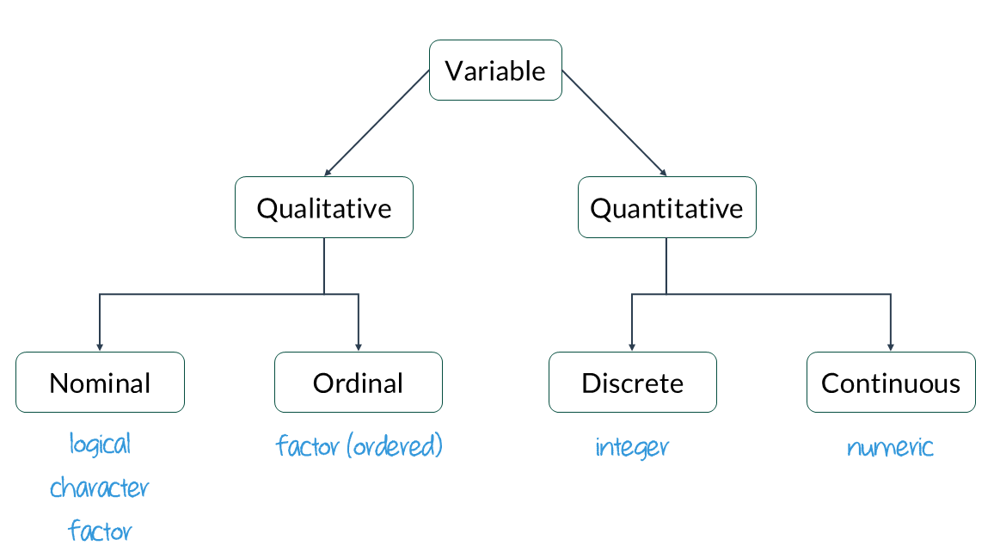

install.packages("summarytools")Introduction to Data
Agenda
- Coding Basics
- Variable Types
- Frequency Distributions
Learning objectives
By the end of the lecture, you will be able to …
- use R to conduct basic calculations/comparisons
- identify and convert variable types
- create useful frequency tables
Code-along 02
Packages
Install the summarytools package, available on CRAN.
Load the standard packages and our new summarytools() package.
library(here)
library(tidyverse)
library(haven) # not core tidyverse
library(gssr)
library(gssrdoc)
library(summarytools)Load your data & codebook
# Get the data only for the 2024 survey respondents
gss24 <- gss_get_yr(2024)
# Load the codebook
data(gss_dict)Coding Basics
Coding basics
You can use R to do basic math calculations
1 + 2[1] 32 * 5[1] 10(1 + 2) / 2[1] 1.5You can create new objects with the assignment operator <-
x <- 3 * 4
x[1] 12You can (and should) make comments in your code
# R will ignore any text after # for that line
primes <- c(2, 3, 5, 7, 11, 13) # create vector of prime numbers
primes[1] 2 3 5 7 11 13Object names must start with a letter and can only contain letters, numbers, _, and .
i_use_snake_case
otherPeopleUseCamelCase
some.people.use.periods
And_aFew.People_RENOUNCEconventionSource: R for Data Science
Coding basics: demo
a <- 7
b <- 3
addition <- a + b
subtraction <- a - b
multiplication <- a * b
division <- a / b
exponentiation <- a^2a[1] 7b[1] 3addition[1] 10subtraction[1] 4multiplication[1] 21division[1] 2.333333exponentiation[1] 49Operators in R
Operators in R are symbols directing R to perform various kinds of mathematical, logical, and decision operations. A few of the key ones to know before we get started:
Assignment operators assign values to variables:
<-, ->, =
Comparison operators test equality or inequality:
==, !=, >, >=, <, <=
Logical operators indicate “and”, “or”, and “not”:
&, |, !
Comparison operators
| operator | definition |
|---|---|
< |
is less than? |
<= |
is less than or equal to? |
> |
is greater than? |
>= |
is greater than or equal to? |
== |
is exactly equal to? |
!= |
is not equal to? |
Comparison operators (cont)
x <- 5
y <- 3
equal <- x == y
not_equal <- x != y
less_than <- x < y
more_than <- x > y
less_than_or_equal_to <- x <= y
more_than_or_equal_to <- x >= yx[1] 5y[1] 3equal[1] FALSEnot_equal[1] TRUEless_than[1] FALSEmore_than[1] TRUEless_than_or_equal_to[1] FALSEmore_than_or_equal_to[1] TRUESource: IONOS editorial team
Logical operators
| operator | definition |
|---|---|
x & y |
is x AND y? |
x | y |
is x OR y? |
is.na(x) |
is x NA? |
!is.na(x) |
is x not NA? |
Logical operators (cont)
x <- TRUE
y <- FALSE
and_operator <- x & y
or_operator <- x | y
not_operator <- !xand_operator[1] FALSEor_operator[1] TRUEnot_operator[1] FALSESource: IONOS editorial team
Assignment operators
Make a tiny data frame and save it.
df <- tibble(x = c(1, 2, 3, 4, 5), y = c("a", "a", "b", "c", "c"))
df# A tibble: 5 × 2
x y
<dbl> <chr>
1 1 a
2 2 a
3 3 b
4 4 c
5 5 c Variable Types
Data types in R
A property is assigned to objects that determines how generic functions operate with it.
Common ‘types’ or ‘classes’ of variables:
- logical
- character
- integer
- numeric
- and more, but we won’t be focusing on those
Data class + variable type

class()
logical - Boolean values TRUE and FALSE
class(TRUE)[1] "logical"character - character strings
class("Sociology")[1] "character"Integer - numeric data without decimals
(indicated with an L).
class(2L)[1] "integer"numeric - default type if values are numbers or if the values contain decimals.
class(2.5)[1] "numeric"Factor
factors consist of character data with a fixed and known set of possible values
opinion <- factor(c("like", "dislike", "dislike", "hate", "dislike", "hate"))
class(opinion)[1] "factor"# By default, the levels are sorted alphabetically.
levels(opinion)[1] "dislike" "hate" "like" # Reorder the levels with the argument `levels` in the `factor()` function
opinion <- factor(opinion, levels = c("hate", "dislike", "like"))
levels(opinion)[1] "hate" "dislike" "like" # If the order has meaning (like rankings), you can make it an ordered factor
opinion <- factor(opinion, levels = c("hate", "dislike", "like"), ordered = TRUE)
levels(opinion)[1] "hate" "dislike" "like" Converting between types
Use a function: as.logical(), as.numeric(), as.integer(), or as.character().
Create a numeric variable.
x <- 1:3
x[1] 1 2 3class(x)[1] "integer"Change it to a character variable.
y <- as.character(x)
y[1] "1" "2" "3"class(y)[1] "character"Haven labelled
When you import data into R from software like SPSS, Stata, or SAS, you might notice a special class called haven_labelled.
class(gss24$premarsx)[1] "haven_labelled" "vctrs_vctr" "double" table(gss24$premarsx)
1 2 3 4
357 122 258 1378 Haven labelled cont.
It makes data easier to understand without needing a separate codebook.
- 1
- A description of the variable
- 2
- View the label attached to each numeric value
[1] "Sex before marriage"
Labels:
value label
1 always wrong
2 almost always wrong
3 wrong only sometimes
4 not wrong at all
5 other
NA(d) don't know
NA(i) iap
NA(j) I don't have a job
NA(m) dk, na, iap
NA(n) no answer
NA(p) not imputable
NA(r) refused
NA(s) skipped on web
NA(u) uncodeable
NA(x) not available in this release
NA(y) not available in this year
NA(z) see codebookThe column itself might have a variable label (a description like “Gender of respondent”)
The column contains values (numbers)
Each value may have a label attached (like “Male” for 1, “Female” for 2)
Haven labelled cont.
You can use as_factor to see the value labels of the variable premarsx.
table(as_factor(gss24$premarsx), useNA = "ifany")
always wrong almost always wrong
357 122
wrong only sometimes not wrong at all
258 1378
other iap
0 1126
don't know I don't have a job
50 0
dk, na, iap no answer
0 6
not imputable refused
0 0
skipped on web uncodeable
12 0
not available in this release not available in this year
0 0
see codebook
0 Convert labels to factors
- Get rid of all the ‘missing’ (NA) levels
gss24$premarsx <- zap_missing(gss24$premarsx)
table(as_factor(gss24$premarsx), useNA = "ifany")
always wrong almost always wrong wrong only sometimes
357 122 258
not wrong at all other <NA>
1378 0 1194 - Apply the labels instead of numeric values
gss24$premarsx <- as_factor(gss24$premarsx) # replace the values with labels
table(gss24$premarsx, useNA = "ifany") # notice we didn't need to wrap the variable in as_factor
always wrong almost always wrong wrong only sometimes
357 122 258
not wrong at all other <NA>
1378 0 1194 - Get rid of the empty levels in
premarsx.
gss24$premarsx <- droplevels(gss24$premarsx)
table(gss24$premarsx)
always wrong almost always wrong wrong only sometimes
357 122 258
not wrong at all
1378 Now do the same for the sex variable.
Convert labels to factors cont.
Look at variables
Relative frequency table
Let’s try functions from the summarytools package to get univariate (1 variable) and bivariate (2 variables) descriptive statistics.
Make a frequency table of the variable sex. Then, do the same for premarsx.
freq(gss24$sex)
freq(gss24$premarsx)Relative frequency table
Frequencies
gss24$sex
Type: Factor
Freq % Valid % Valid Cum. % Total % Total Cum.
------------ ------ --------- -------------- --------- --------------
male 1467 44.59 44.59 44.33 44.33
female 1823 55.41 100.00 55.09 99.43
<NA> 19 0.57 100.00
Total 3309 100.00 100.00 100.00 100.00Frequencies
gss24$premarsx
Type: Factor
Freq % Valid % Valid Cum. % Total % Total Cum.
-------------------------- ------ --------- -------------- --------- --------------
always wrong 357 16.88 16.88 10.79 10.79
almost always wrong 122 5.77 22.65 3.69 14.48
wrong only sometimes 258 12.20 34.85 7.80 22.27
not wrong at all 1378 65.15 100.00 41.64 63.92
<NA> 1194 36.08 100.00
Total 3309 100.00 100.00 100.00 100.00Pretty tables
One of summarytools main purposes is to help clean and prepare data for further analysis. But sometimes we don’t care about the missing values.
Using report.nas = FALSE suppresses the missing data.
The headings = FALSE parameter suppresses the heading section. Do the same for premarsx.
freq(gss24$sex, report.nas = FALSE, headings = FALSE)
freq(gss24$premarsx, report.nas = FALSE, headings = FALSE)Pretty tables
Freq % % Cum.
------------ ------ -------- --------
male 1467 44.59 44.59
female 1823 55.41 100.00
Total 3290 100.00 100.00
Freq % % Cum.
-------------------------- ------ -------- --------
always wrong 357 16.88 16.88
almost always wrong 122 5.77 22.65
wrong only sometimes 258 12.20 34.85
not wrong at all 1378 65.15 100.00
Total 2115 100.00 100.00Cross-tabs
We’ve been using the table() function with one variable at a time, but it also let’s you create a frequency table (crosstab) with two variables.
# 1st variable is the rows, 2nd variable is the columns.
table(gss24$premarsx, gss24$sex)
male female
always wrong 146 209
almost always wrong 44 77
wrong only sometimes 127 130
not wrong at all 616 758But it’s missing the column percentages…
Relative frequency by group
To run freq() by group, pair it with the stby() function.
stby(gss24$premarsx, gss24$sex, freq)NA detected in grouping variable(s); consider using useNA = TRUEFrequencies
gss24$premarsx
Type: Factor
Group: sex = male
Freq % Valid % Valid Cum. % Total % Total Cum.
-------------------------- ------ --------- -------------- --------- --------------
always wrong 146 15.65 15.65 9.95 9.95
almost always wrong 44 4.72 20.36 3.00 12.95
wrong only sometimes 127 13.61 33.98 8.66 21.61
not wrong at all 616 66.02 100.00 41.99 63.60
<NA> 534 36.40 100.00
Total 1467 100.00 100.00 100.00 100.00
Group: sex = female
Freq % Valid % Valid Cum. % Total % Total Cum.
-------------------------- ------ --------- -------------- --------- --------------
always wrong 209 17.80 17.80 11.46 11.46
almost always wrong 77 6.56 24.36 4.22 15.69
wrong only sometimes 130 11.07 35.43 7.13 22.82
not wrong at all 758 64.57 100.00 41.58 64.40
<NA> 649 35.60 100.00
Total 1823 100.00 100.00 100.00 100.00This is hard to read and we don’t need the cumulative frequencies.
Pretty cross-tabs
Use summarytools::ctable instead!
- 1
-
Change from
table()toctable(). - 2
- The “c” gives column %; “r” would give row %.
- 3
- This adds the % symbols to the table.
- 4
- Exclude the missing levels from the table.
Cross-Tabulation, Column Proportions
premarsx * sex
Data Frame: gss24
---------------------- ----- -------------- --------------- ---------------
sex male female Total
premarsx
always wrong 146 ( 15.6%) 209 ( 17.8%) 355 ( 16.8%)
almost always wrong 44 ( 4.7%) 77 ( 6.6%) 121 ( 5.7%)
wrong only sometimes 127 ( 13.6%) 130 ( 11.1%) 257 ( 12.2%)
not wrong at all 616 ( 66.0%) 758 ( 64.6%) 1374 ( 65.2%)
Total 933 (100.0%) 1174 (100.0%) 2107 (100.0%)
---------------------- ----- -------------- --------------- ---------------Based on your table, what percentage of respondents believe sex before marriage is ‘almost always wrong’?
- 5.7
- 16.8
- 121
- 12.2
Based on your table, do a greater percentage of men or women think sex before marriage is ‘not wrong at all’?
- Men
- Women